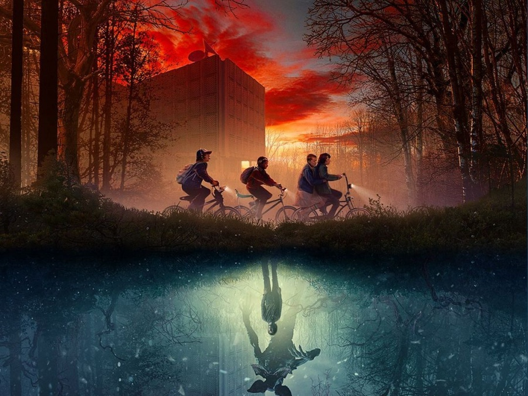

Experiencia en el Laboratorio de Hawkins
Adentrate en el misterioso Laboratorio de Hawkins, el lugar donde todo comenzó. Explorá los pasillos secretos, los experimentos ocultos y los archivos clasificados que dieron origen al portal hacia el Otro Lado.

La Noche del Otro Lado
Una grieta entre dimensiones se abre sobre Hawkins. Durante una noche, podrás caminar por el Otro Lado, enfrentarte a las sombras y sentir la atmósfera oscura de este universo paralelo.